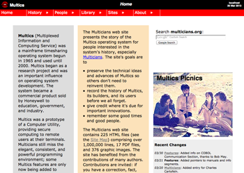
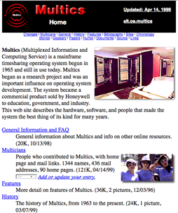
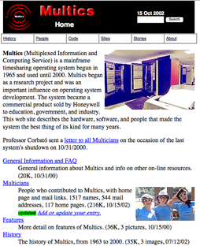
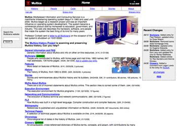
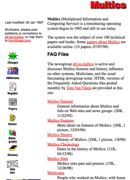

2026-01-30
Creating Computer History Web Sites
I wish there were more good web sites about computer history.
I started a web site about the Multics operating system in 1994, to publish the Multics related information from the USENET news group alt.os.multics (which still exists but has very little traffic). After almost 32 years of growth and improvement, the site is still available at www.multicians.org.
This page is for people who ask me how to start their own history site. It is a "brain dump" of lessons I have learned while building and maintaining web sites. Some of the information here may apply to building other kinds of sites.
I don't think there is "One Right Way to Make Web Sites." The way you choose will depend on your subject, goals, audience, technology, and resources. I keep learning, and improving the sites I work on: this page describes my current Right Way, for history-related pages.
Kipling says,
"There are nine and sixty ways, of writing tribal lays,
and--every--single--one--of--them--is--right."
Goals And Audience
Your web site has a purpose, and a message you want to convey. What will visitors take away from a visit to your site? Why would they return, and how can you make their return visits rewarding?
Visitor Model
Who will visit your site? Some of your choices will be driven by your model of your site's visitors, in particular
- Visitor goals (nostalgia, term paper, homework, curiosity, research, dispute, ...)
- Subject matter familiarity (do they know a little or a lot about your site's subject)
- Impatience (will they bail if a page loads slowly)
- Attention span (are they willing to click on links)
- Visitor interaction style (exploration vs drive-by)
- Device used: PC, tablet, mobile phone (and do they use more than one kind)
- Skill at using their web browser (do they use the back button)
- Display size and sharpness
- Browser facilities (JavaScript)
- Connection speed, latency, and bandwidth; price consciousness
- Language and accessibility needs
- Experience with other web sites' conventions (can they use a "hamburger" button)
- Interaction modes (audio podcast, video streaming, forms, galleries)
- Ability to understand complex language (reading difficulty score)
How will visitors find your site? (See below.)
Narrative Approach
Choose the ways you want to tell your story. Here are a few examples:
- like a book (linear story, strong message)
- blog (sequences of articles, usually ordered by topic and when they were written)
- library (self service, collection of artifacts, organized according to some rule)
- wiki (text written and revised by many writers, with minimal control)
- alumni list (listing of people, perhaps with contact information)
- social network (facilitating contact among a group of interested folks)
- formal history (information documented in books, selected to conform to a hypothesis)
- museum (comprehensive collection of information, for specialists as well as the general public)
In other words, decide what information you want to present, and how it will be organized. You might choose several, depending on your visitors' goals.

multicians.org in 2013. jQuery menus and sliding photo window, Google search.
Basic Terms
Web pages coded in HyperText Markup Language (HTML) are sent via the Internet to a visitor's web browser (on a computer or smart phone) from a web server, a program that sends requested data from a host. Each web page describes how text and graphic images are presented to each visitor. Cascading Style Sheets (CSS) for a web page define how HTML elements are shown.
Getting Started
There's a lot to know about producing web sites, and it will take hours of time to make a good one.
The great thing about publishing on the web is that you can start small and keep improving your story as you write more. If you think of a better way to say something, or notice a spelling error, you can fix it. It's not like a book, where you must do all your writing and spelling checks before you publish.
Start by writing notes to yourself about what you want on the site. Put in whatever you think would interest visitors: dates, people, features, anecdotes. Next, start turning the story into web pages. Over time you can learn more about making web pages, and make your site better, and add more information.
(You may hope to build a community of enthusiasts that will contribute content, help build and format pages, and correct errors. Sometimes this doesn't happen, and you end up doing most of the work yourself.)
(Some computer history web sites seem to assume the visitor is a newly-arrived space alien, who understands our language perfectly but has never heard of computers or the history of the 20th century. Such sites spend a lot of time explaining ideas and facts that are relatively common knowledge. This can be useful, in that one can correct common misunderstandings, but it risks boring visitors who think they already know the context.)
Design Your Site
The design of your web site includes
- Organizing your information into web pages.
- Designing the way visitors will navigate between pages.
- Establishing what elements should be on every page.
- Choosing a visual look for your pages.
There's no one right way to do this: it depends on the way you expect visitors to use your site, and on the tools you will use to create and maintain the site. The best way is to start with a simple structure, and expect to redesign it several times.
Find a few sites that you admire, and see if their style would work for your information.
Sketch a few pages as story boards or pictures, and imagine how site visitors with different needs would arrive at your site, how they would decide if they were on the right page, and how they would navigate to the page that answered their questions. Then sketch the same pages as if viewing them on a mobile phone, and try the same exercise.
If your site is ugly, confusing, or hard to navigate, visitors will leave early and miss part of your message. Site design also affects how your site is indexed by search engines such as Google; you need to include information that makes each page understandable to the search engines' web crawlers. Since many of your site visitors will arrive at an interior page of your site from a web search, your design should ensure that visitors can understand what they've found and how to find other information on the site.

multicians.org in 1999. HTML links for top navigation. Drop shadows on pictures.
Re-Design
The downside of publishing on the Web is the need to keep enhancing your site's presentation. The technology for using the Web keeps improving. Device capabilities and bandwidth evolve. The Web languages evolve, and old ways of presenting information are replaced by new ways. Visitors' prior knowledge, browsing skills, preferences, expectations, and interests change.
Re-design your site occasionally. Commercial sites do a re-design every couple of years, to keep the site from looking old and neglected.
The multicians.org site has had thousands of changes in 32 years, including many additions to the content of the site as well as lots of minor presentation improvements and four or five major re-designs to the site's look and feel.
Reasons to Re-Design
No matter what you write on your site, you'll probably want to change it later. Creating a web site is a continuing process, very different from writing and publishing a book. A published book can't be easily improved, corrected, enhanced, or simplified. Some reasons that may make you want to update your web site include:
Feedback from site visitors and information from your web usage logs can tell you what needs improving. Learn from how other sites present their content. Features that were trendy and cutting-edge a few years ago may look old-fashioned as newer approaches become popular: keep aware of new devices and browser features, and decide if you need to use them. Here are some things you might want to do:
- Incorporate new information.
- Improve web site performance, accessibility, and security.
- Make the site look fresh.
- Support mobile devices with small displays and different navigation.
- Utilize larger or sharper displays when visitors have them.
- Keep up with changes in HTML and CSS features and standards. (These change often.)
- Adopt new technologies (e.g. color, animation).
- Eliminate outdated technologies (e.g. frames, Flash, Java).
- Enrich the presentation of your information.
- Clarify the concepts and properties you use to describe things.
- Adapt to the evolution of audience abilities and preferences.
- Ensure that the site's facts and presentation are consistent.
Start Implementing Your Site
Starting from a preliminary design, create initial versions of your pages. You can do this on your own computer, without signing up for anything or paying any extra. Or you can use web site design tools, on your computer or on external Web pages. These tools make some steps easy. You can try different tools, and change your page till you like it.
Where you plan to host your site will influence how you build your prototype. See "hosting" below.
While you develop iterations of your site, remember to make backups of the site regularly. Make sure that no catastrophic failure can erase all your hard work, and make it possible to easily undo choices that turn out to be mistakes.
Markup languages
HTML is known as a "markup" language. That is, it consists of regular text, and symbolic "marks" that specify how the text will be arranged, decorated, and presented. HTML's markup is enclosed in angle brackets: a paragraph is indicated as <p>Paragraph text...</p> and so on.
(The earliest markup language I used in the 60s was implemented by the RUNOFF command on CTSS, which processed input consisting of lines of text and control lines that began with a period.)
The syntax and interpretation of HTML and its associated languages is specified by the World Wide Web Consortium (W3C). An HTML document marks some of its text as headings, some as paragraphs, some as bold, and so on. This used to be called "semantic markup." When the HTML is presented to a reader, there are rules that say how to display text according to the specified semantics -- and you can change the rules.
HTML keeps evolving: new features are added and old ones are made obsolete. Visitor needs and behaviors change. Devices with new abilities may need changes to site organization and presentation.
Content Management Systems
 Web content management systems and other web site generator tools are available that can make it easier to get started.
Blogging and Wiki software can be used to build web sites and to separate content from presentation.
Some of these tools provide "themes" or "layouts" that can establish a set of visual design rules for a site,
generate navigation links, and shield the site creator from the details of HTML and site publishing.
Each content management system makes some tasks easy and other tasks difficult.
(I don't use these systems myself, but some people really like them. See below.)
Web content management systems and other web site generator tools are available that can make it easier to get started.
Blogging and Wiki software can be used to build web sites and to separate content from presentation.
Some of these tools provide "themes" or "layouts" that can establish a set of visual design rules for a site,
generate navigation links, and shield the site creator from the details of HTML and site publishing.
Each content management system makes some tasks easy and other tasks difficult.
(I don't use these systems myself, but some people really like them. See below.)
Some companies provide a complete service: hosting your site, registering your domain, handling your email, and providing tools to build web pages (for example, Square). You'll pay extra -- which is OK if you get good services. If you are considering a service like this, talk with current users of the service about their experience before you commit.
Some content management and web building tools stop being updated or supported, or make changes that require you to adapt. Tool developers may lose interest, or the company that produces them may change its plans. Hosting companies can change direction, get sold, or go out of business. If your site is built using one of these, you'll have to find a new platform and go through a process of rebuilding your site. Tools can stop working: for example, Apple Macintosh computers used to come with iWeb, which allowed users to design, create, and publish web sites and blogs without coding HTML, until it was discontinued in 2012.
Some Web Content Management Systems have their users specify text in a simpler input language called Markdown and translate it to HTML internally. Different systems use slightly different "flavors" of the Markdown language, which can make it difficult to share markdown text or to move from one WCMS to another. Furthermore, Markdown may make it hard to use some HTML features you want.
I believe that web site implementers need to know HTML and CSS. When your web site has a problem, and doesn't display information the way you want, for some combination of device, browser, and contents, you will have to look at the HTML and CSS that is failing, and figure out the cause. If you wrote your site in some other language that generated your HTML, you'll have to look at the generated HTML and figure out the cause of your problems, and then change your other-language code to fix it. To me, this looks like more work for worse results.
Steps In Site Creation
Here is a high level overview of how you might develop your site.
1. Scope and Content
Start by thinking about the whole scope of your site. What should be present on the site, and what's out of scope? Should there be several related sites, for different audiences? Could your initial site grow later to add additional information, or stories, or features?
2. Design Mockup
Next, make a conceptual design mockup -- maybe a sketch. Choose the kind of information on the site, and how it will be organized and presented. Discuss it informally with collaborators, if any, and with members of your proposed audience. If you feel you need permission from anyone to proceed, this is a good time to think about getting it.
3. Prototype
Build a site prototype of a few pages. Start by choosing a site building technology. You could
- write HTML code directly in a text editor
- get someone to write some HTML for you
- use a web page builder or other site management system, like Square
- find an example web site similar to what you want, and change it
This could be easy or hard, depending on what you already know, how much you want to learn, and how hard it is to get the site behavior you want.
You can start by building and viewing your pages on paper, or on your own computer, without getting any account anywhere.
Iterate your design and your prototype implementation until you like the look. You may start over a couple of times.
4. Implement
The detailed implementation of your pages will require choosing what's on the page, designing the presentation of its information content, translating the page's text into some markup language (either HTML or whatever your web content manager takes), designing headings and captions, and converting and resizing pictures. Often this requires repeated iterations until you get things to look the way you want.
If you plan to have particular site features, then you need to choose methods for providing them. For example, if you choose to allow visitors to post comments, then you will plan to implement your site using a page generation system that supports this feature, or you can search the web for modules that can be adapted to your site, or you can write your own. Other features you may want include picture galleries, login or signup facilities, file upload, site search, and many more. As you scope out what features you need and how you'll get them, you may revisit your site generation technology.
Embrace HTML, Don't Fight It
The HTML and CSS languages separate content and organization from presentation. HTML documents can be presented to visitors in many ways, to accommodate visitor preferences and limitations, and device and language evolution. Test your site on multiple kinds of devices; for example, many visitors view content on mobile phones. Your web content should be usable on devices such as watches and TV screens, by visitors with slow connections or slow hardware, and by visitors who need output and input transmitted in multiple ways.
Don't try to design your web pages the way you'd lay out a print document. You can't know, and shouldn't care, about your web visitor's screen size, fonts installed, or colors available. The visitor's web browser, preferences, OS, and hardware manage these concerns. Your HTML for each page provides text annotated with semantics like "this is a paragraph" or "this is a caption." These are arranged and translated into pixels on a screen (or whatever the visitor chooses) at viewing time by each visitor's browser.
Don't write over-specific HTML that makes it difficult to adapt your content to visitor needs and device constraints. For example, don't specify fixed font sizes: use a percentage of the visitor's default browser setup. And don't specify fixed font colors: some people have trouble reading certain colors.
Do use HTML to provide semantic information that will allow screen readers and alternative browsers to present your content in many different situations. For example, see https://developer.mozilla.org/en-US/docs/Learn/Tools_and_testing/Cross_browser_testing/Accessibility. Visitors may set their preferences to use larger text or different colors, or use audio screen readers instead of graphics.
Read and think about How People with Disabilities Use the Web. Make sure that your content can be accessed using keyboard input as well as pointing devices, and that it can be accessed using touch screen as well as mouse input (e.g. there is no "hover" on touch screens, so TITLE attributes may not be visible). Ensure that every image on your site has ALT text specified that describes the image and explains how it relates to the page content.
Make sure that your content isn't cut off on small devices: don't use fixed width tables or frames.
Try printing a page from your site, to make sure the printed version is readable.
5. Review and Incremental Improvement
Your visitors will bail out if they can't read your page.
Verify every HTML page with the  W3 Validator, and eliminate errors.
Check your site with multiple browsers, old and new, and multiple operating systems and device types.
W3 Validator, and eliminate errors.
Check your site with multiple browsers, old and new, and multiple operating systems and device types.
Use a tool like  Google Web.Dev to check your site's loading speed, security, and conformance to specs.
If your page takes longer than 1 second to load, improve it.
Google Web.Dev to check your site's loading speed, security, and conformance to specs.
If your page takes longer than 1 second to load, improve it.
Ask members of your target audience to try the site out and comment, and look for ways to simplify and focus your design. Look at your traffic statistics to see what information is popular, and what people search for that brings them to your pages, and use that information to make your site more useful to them.
Keep improving your site. You can add more content as you write it, and you can also add new site features.
Maintain and check your site. Check your spelling. (I use Aquamacs Emacs, uses the MacOS spell checker.) Read articles and see if they are still true, and if they could be more clear. Use a tool like Integrity to occasionally check every hyperlink on your site to find broken links, and fix them. Check your site speed, and find ways to make it faster.
6. Promote
There were about 1.3 billion web site domains at the end of 2023. (10 to 15% of these represent actively updated web sites.) How will people find your site? You'll need to
- Get other well-ranked sites to link to your content.
- Make sure your site is well indexed by Google and other search engines.
- Point to your site from social media, mailing lists, and forums.
- Use your personal network.
- Encourage visitors to tell others about your site.
Don't send spam email.
"Search Engine Optimization"
There are many web sites and services that deal with "SEO." Some of the practices they recommend are sensible:
- write clearly
- make sure your page identifies its contents in ways that web indexing software can recognize
- make sure your page loads quickly
There are some SEO services advertised that try to trick Google into listing your page near the top, for certain search terms. This is a bad idea. Google changes its crawler software and ranking algorithms all the time to spot such tactics and ignore them, or even penalize your page's rank for using them. Don't buy, sell, or exchange links, or post spam linking to your site. Don't code hidden irrelevant text or links into your pages. Don't steal content from other sites. Don't get hacked.
Google Search Central (used to be called Google Webmaster Tools) has a Search Engine Optimization Starter Guide and describes how Google Search detects and penalizes spam.
7. End of Life
Consider the expected lifetime of your site: how long do you want to maintain it? It's worth planning how to end the life of the site, if it is expected to have a finite life. Archiving, distribution of assets, and relinquishment of resources can be planned ahead of time. You also need a succession/exit plan for your site, in case you become bored or incapable.
Site Implementation
Site Features
Here are kinds of content you might put on your site:
- Articles about the subject.
- Stories and anecdotes written by people with first-hand experience, e.g. Multics Stories.
- Primary documents, such as published articles and papers, manuals, memos, etc. You can provide PDF scans of original documents, or convert the documents to HTML.
- About page describing the site, its maintainers, and its history.
-
Pictures. It's hard to stay interested in a site that's all words. multicians.org uses
- Interpolated pictures
- Pop-up lightbox displays
- Gallery thumbnail pages
- Sliding picture galleries
- Background pictures
-
Myths. The Myths About Multics page on multicians.org tries to correct wrong information on Multics found on other sites.
The
 Michigan Timesharing System site had a similar page... they seem to be down though.
Michigan Timesharing System site had a similar page... they seem to be down though.
- Bibliography of published materials about your subject.
- Links to other web sites, with annotations.
- Timelines showing when events occurred. Multics History displays a timeline. (I built a little open source tool to generate such timelines. You can adapt it to your needs.)
- Glossary defining words and acronyms.
- Change Log or What's New listing.
- Search box. Provide a way for people to look for terms and names in your site.
- Directory of people involved with the subject.
- Guest book where visitors to the site post comments. (multicians.org doesn't do this. See Comments below.)
- Source code. Ensure that you have permission and copyright clearance for any files you post. Consider finding a way to annotate and cross-reference files. (multicians.org used to present a small sample of Multics source, annotated with explanations. When Honeywell Bull released the entire MR12 source to MIT, I built an index of all 5877 source files in the MIT source, and added it to multicians.org.)
- Object code. (multicians.org doesn't provide this. It does point to sites that have object code.)
- Videos. Some visitors prefer to watch videos rather than read text: they can start a video and be shown and told a linear story.
- Podcasts. Some visitors prefer to listen to you talk rather than read text. Again, this is a linear experience.
- Downloadable simulators. (multicians.org/simulator.html points to a site for the Multics simulator.)
-
Interactive demonstrations. Errol Morris's story about the origins of email included an interactive CTSS simulation.
It was written in Adobe Flash, which is no longer supported by modern web browsers.
Writing
Use clear, direct, concise, simple language. Many visitors will have a hard time reading all of a long paragraph. (I know this, because people send me questions, based on the first sentence in a paragraph, when the answer is later in the same paragraph.)
Use subheadings, lists, and tables so visitors can remember their place in the text, and quickly grasp your message.
Check your spelling, punctuation, and grammar. Some readers bail out of a page that has ignorant errors.
A history site will probably have a lot of text; consider the readability score of this text. Break text into chunks the visitor can navigate among, and include visual elements where possible. (I just Googled "web site readability." Several of the top 10 pages were ugly, hard to read, or did not work in my browser.)
- "Omit needless words." (Strunk and White, The elements of Style)
- Use bulleted lists.
- Put your conclusion first.
- Show the structure of your page with headings.
- Include pictures.
- "Deliberately forego any elegance or ornament." (Roland Barthes, Writing Degree Zero)
Web Site readers are often impatient. If there is a huge wall-of-text paragraph, they will skip it.
TL;DR
Perhaps you have encountered the note tl;dr as a visitor's summary of your pages. It means too long; didn't read. They looked at your carefully laid out explanation, read the first sentence, and got distracted. ("Proust? Yeah, the guy who went to bed early, right?")
Neilsen suggests that "Links to other sites show that the authors have done their homework and are not afraid to let readers visit other sites." This may be wise, buy my experience is that many readers don't follow the links I carefully include in my writing; instead they skip the links and just guess at the meaning of linked terms.
Probably the best thing you can do is to find someone to review and comment on what you have written.
Jakob Neilsen's Advice
Jakob Neilsen has been studying how people use the Web for over 40 years. In his article How Users Read on the Web he says: "They don't. People rarely read Web pages word by word; instead, they scan the page, picking out individual words and sentences."
Neilsen suggest that you employ
- highlighted keywords
- meaningful sub-headings
- bulleted lists
- one idea per paragraph
- starting with the conclusion
- half the word count of conventional writing
Organization
Organize your content into a consistent classification using terms that your visitors understand. (Have you ever visited a company site where you have to choose between, say, "Small Business" and "Home," or some similar distinction that makes sense to them, but not to you, because you don't know their classification scheme? If I do some business at home, which do I choose?)
Name your files and directories consistently. People may need to type the names, so they shouldn't be too long -- but they shouldn't be too cryptic. You will specify file names when a page looks for its graphics, CSS, JavaScript, etc., and when it links to other pages. Search engines consider the file name when they decide a page's relevance to a search term, so names shouldn't be incomprehensible. Putting everything in a single directory will become unwieldy if your site begins to get large. Putting everything in a tree of subdirectories might make more sense, but needs careful thought: if you need to change the organization, you'll need to redirect links so that visitors (and search engines) can find pages by both old and new addresses.
Navigation
Important content on any page should be visible without scrolling ("above the fold"), because many web page visitors will arrive at a page, glance once at it, and exit if they don't see something that catches their eye.
Make site navigation elements consistent on every page, instantly identifiable as navigation links, and unsurprising. Provide a unique TITLE on each page that identifies its subject. (Search engines use these titles: try to make them clear.)
On multicians.org, every page has a search button that takes visitors to a page that searches the whole site, and other relevant sites. I use the "free" Google Search feature to let users search multicians.org; this means that Google can track users' searches.
Visitors will arrive at pages on your site via a Google search, and if the page they find doesn't answer their question, they should see links to a better page. In addition to standard menus, consider "breadcrumb" links that link to category indexes and the home page, and "sibling" links to other pages in the category. Ensure that every page has a link to the home page of your site.
People may link to some of your pages from other sites; if visitors arrive at your pages via such a link, how will they know they're on your site, and can they understand how to find more information?
Menus
Many sites have some kind of drop-down menus. Use identical menus on every page, and have that menu structure be the way you expose your information classification to visitors. Small displays and mobile phones may require different navigation mechanisms, so that screen space is not consumed by links unless the visitor asks for them.
In an initial design of multicians.org, I had different menus on different kinds of pages. This was frustrating to the user: sometimes they wanted to locate a page they previously found via a menu, and couldn't find it in the menus of the page they were reading. I realized that most visitors to the site don't have a complete mental model of where every page was, and didn't want to have one.
Search Engine Friendliness
Many readers will come to your page as a result of a web search, so it is important to help the search engines understand what the page contains.
Provide a TITLE tag on each page that identifies its subject. The page title is displayed in search results. Provide a META DESCRIPTION tag that explains the page's content. This text will also be displayed in search results. If there is no description tag, the first words of the first paragraph on the page will be displayed. The content of these items is used to index the page, so you should ensure that they contain words or phrases that visitors will use to search for your pages. (Google Search console will complain if pages have duplicate titles or descriptions.)
Tone
Establish a consistent tone for your site's content. If there are multiple opinions about your subject, decide whether to have the site represent a single position, or to include multiple viewpoints. Separate fact and opinion, and show how each is derived. Do you want to explain every term that you use in simple language? ("Timmy, dinosaurs were very very big.") Is your site talking down to visitors?
Trade-offs
You may be concerned about your site's cost, speed, security, popularity, capacity, reliability, time and effort to build, attractiveness, ease of update, freedom from restrictions. Divide these qualities into MUSTs and WANTs, and specify how they can be measured, and about situations where improving one factor impacts another factor.
When I was a beginner operations research analyst, my boss taught me to ask, every half hour, "What are we trying to optimize?" ... so as not to waste the next half hour.
The Chocolate Chip Cookie Recipe
I think every web site should give something to its visitors, something they value and will return to see again. I call this "The Chocolate Chip Cookie Recipe." It will be different for different parts of your audience. For a computer history site, you might aim for "comprehensive information, well organized."

multicians.org in 2002. JavaScript dropdown menus, home-brew search.
HTML Implementation
If you see a neat feature on some other site, you can view the page's source, or search the web to find out how to do it. For example, fluid design (so that a web page uses the window effectively as it grows and shrinks) is something good sites do.
You can view your pages in the Google Chrome browser and select View >> Developer >> Inspect Elements. If there are browser error or warning icons, they will show up at the top: try to fix them. The inspector panel has a menu bar at the top; select >> Audits. This runs Chrome Lighthouse, which suggests performance, accessibility, and SEO fixes. Fix the ones that are important to you. The home page for multicians.org is fully up in 0.5 seconds for desktop mode.
I alternate between writing content and creating HTML that displays the content. When I look at a page in a browser, I often see ways to improve it.
Think of your visitors' needs as they read a page: Besides reading the content of the page, they will want to know what it's a part of, and how to find related information. For example, I put the date modified for each page near the top, so that visitors can quickly see if a page is ancient and possibly out of date, or if the page has been updated since they read it last.
Consider how your site looks on smartphones and tablets.
Fluid design that handles a small display is one part;
also avoid features that these devices don't support, such as menus that depend on HOVER.
When Google crawls a site, it decides whether the pages are "mobile friendly" and will demote non-friendly sites in mobile search results.
 Google webmaster tools will provide advice on how to make pages mobile friendly.
(This has not been a big consideration for multicians.org, since our web traffic is only about 10% from smartphone users.)
Google webmaster tools will provide advice on how to make pages mobile friendly.
(This has not been a big consideration for multicians.org, since our web traffic is only about 10% from smartphone users.)
Consistent Facts
If one page in your site provides the visitor a fact, and another page in your site contradicts it, your visitors will be distressed. Inconsistencies may creep in when a fact changes (e.g. the URL of an external page) or when you correct an error. Use tools that can scan your site to find or alter a string of characters.
With some work, you can set things up to store facts in one source file and use the file to generate all the HTML that displays the fact, either at the time of page publication or when the page is visited. You could set up "include" files or generate pages from a data base. (Balancing the tradeoffs between visitor convenience, ease of maintenance, consistency, and performance requires care. The First Law of Sanitary Engineering applies.)
Consistent Implementation
Printed books usually use similar layouts for every page, and their design supports a reader making a one-way trip through the book. Web sites are often designed to let a visitor move between pages using multiple navigation methods like hyperlinks and menus. Titles and and category organization on every page will help visitors know where they are in the site.
Using HTML Features
Check that the HTML and CSS features you use for your implementation are correctly supported in
all the browsers and operating systems that your visitors are likely to use.
In practice, this means reasonably recent
Edge, Firefox, and Chrome on Windows;
Safari, Firefox, and Chrome on Mac;
Firefox and Chrome on Linux;
Chrome on Android;
and Safari on iOS.
(Adjust these targets depending on your visitors' statistics.)
Check HTML features by using a site like  caniuse.com if you are not certain.
There are some HTML features that used to be very popular, but are now regarded as obsolete:
features like frames and tables used for page layout have been replaced by CSS.
caniuse.com if you are not certain.
There are some HTML features that used to be very popular, but are now regarded as obsolete:
features like frames and tables used for page layout have been replaced by CSS.
A 2019 update to the W3 Validator complained about HTML I used to write.
For instance, <style type="text/css"> should now be <style>
and <script type="text/javascript"> should be <script>
and <table summary="something"> should be just <table>.
(The last one annoyed me because  HTML Tidy insisted on summary= for years.)
I fixed these problems in all pages.
I left a few issues unfixed and some CSS hacks to accommodate Microsoft Internet Explorer, now obsolete... I will take these out later.
HTML Tidy insisted on summary= for years.)
I fixed these problems in all pages.
I left a few issues unfixed and some CSS hacks to accommodate Microsoft Internet Explorer, now obsolete... I will take these out later.
Support for High PPI Displays
Computer displays with more than 96 pixels per inch have become popular, and web browsers are able to use these high-ppi displays to display very sharp text. Some smartphones and laptops have pixel densities of over 200 PPI. Graphics stored at 96 PPI look fuzzy on such displays. HTML has features that allow you to make your pictures look crisp on such "high DPI" devices.
Accessibility
Design your site so that visitors with different abilities can make use of the content. Blind visitors using screen readers should not be hopelessly lost because your navigation is all in picture elements without ALT tags. Visitors on mobile devices shouldn't be forced to to scroll pages sideways because you put your content in a table wider than their display. Ensure that visitors can navigate your site by keyboard as well as pointer devices.
Use HTML standards checkers like the W3C compatibility checker and HTML Tidy on every one of your pages, and fix the issues they point out.
Check that the major browsers can print your page successfully with their browsers; a page might look fine on screen, but get chopped off when printing. You may need to use fluid design and CSS @media tags. (Look them up.)
You can present the list of recent changes to your site in an RSS feed that points to relevant articles. The downside of this is that some sites will read your feed every 5 minutes, even if you ask them not to.
Language
Should your site be available in multiple languages? HTML has features that support this. If your site content changes often, maintaining versions in several translations will take much more work.
Other Issues
Search Engines. There are some things you should do to make sure your site is easily found in search engines, and listed properly. Use descriptive META, TITLE, and DESCRIPTION tags, and ensure that your body text has valid format so that it is parseable by crawlers, and that the text contains the words and phrases you want visitors to use to find you. Avoid tricks like "keyword stuffing" and "search engine optimization" services... the search engines are wise to these and may penalize your page. Create an XML site map to assist Google in finding your content. (There are other web indexers besides Google.)
Performance.
Visitors will abandon a page that takes too long to load.
There are web sites that check the speed of your site and make suggestions, for instance,  Google webmaster tools.
The Chrome browser's web page inspector will also let you audit your page and suggest ways to make it load faster.
Google webmaster tools.
The Chrome browser's web page inspector will also let you audit your page and suggest ways to make it load faster.
The most significant factor in speed of loading a page is the number of requests made by the browser to the web server. For example, there is a tradeoff between lots of interesting graphics and time it takes a page to load fully. Reducing the number of separate items fetched to present a page will make it load faster. You can use a tool to generate "CSS Sprites" to speed up such page loading. There are also ways to tell a visitor's browser to cache files that don't change often, so that repeated use won't cost as much. Compression of your HTML, JavaScript, and CSS files can make your site load much more quickly. (Look up "mod_deflate.")
Contact Address. Provide a means for visitors to contact the site's editor. To cut down on spam, you can obfuscate the mail address or provide a form that sends mail.
Mail Addresses. People run crawler programs that search every web page they can find for mail addresses, and put these addresses in spam mailing lists. If your site has a guest book, member roster, or comment posting facility, implement some way to prevent your visitors' mail addresses from being scraped.
Social Networks. You could link to your site on social media pages.
User testing. Do some user testing and listen to the feedback.
Documentation. Write down your reasons for design decisions and the procedures for maintaining your site.
Backup. Ensure that your site can be restored after any failure. Back up to multiple places.
Design Decisions for the Multicians Web Site
Here are some design choices I made while building the multicians.org web site. I made two kinds of choices: the HTML code I wrote, and how I packaged the code into files.
Static Pages
I chose to have the web server serve content from complete read-only pages stored on disk, rather than generate pages on the fly, for several reasons: it decreases server CPU and I/O load, and speeds up page delivery; it allows hosting a mirror of the site at an FTP-only site that cannot do any dynamic execution; and it eliminates the chance of security exposure due to bugs in dynamic code (many sites have had problems in this area). When a web page needs to respond to user actions, this behavior can be done by hiding and showing content in each user's browser using CSS. The only way pages on the site change is by replacing entire pages with rsync.
The design of multicians.org also omits features that are hard to implement securely. The site deliberately does not have any mechanism for site visitors to upload a file to the server: many sites have accidentally introduced security bugs when implementing this behavior.
Separate Content from Boilerplate
The article source files for multicians.org contain the content in one file and obtain headings, navigation, and page layout from included files. This division accomplishes several goals: it avoids common mistakes and malformed pages by making it less likely to break the page boilerplate while editing, it puts web page design and layout decisions in include files common to all pages, it ensures consistent look and feel for pages of the same kind, and it helps me enlist others in writing articles without burdening them with complex rules and breakable HTML. This choice, combined with the decision to use static pages, means that some program has to run to expand "source" files into static HTML page files. I wrote an open source macro expander program, in the Perl language.
The source language I write my content in is HTML extended with macros. I call it "HTMX." (This means that I need to know some HTML features to create pages.) My translator program doesn't parse HTML or know its structure: it expands macros, and copies everything else. As new HTML constructs are supported by browsers, I don't have to update my translator to know about them, and I can redesign all pages by editing my include files and regenerating the static pages. The main translation operation is including files; the macro expander provides a few other features to simplify writing content.
Local Database
Some pages that contain lists of items are generated from a local database on my computer. Instead of maintaining big HTML pages, I store the data in SQL input files. My HTMX template language supports iteration of a macro expansion over every row returned by a query, allowing each page's template to create HTML from the data. This is especially useful for table data used in more than one way. For example, I annotate the list of contributors (from the contributors table) with the counts of documents they wrote (from the bibliography table).
Automated Installation
I use standard Unix/Mac tools to invoke the page translator when necessary, and to publish any files that changed. These utilities are available for Unix, Mac, and Windows. The Unix utility make regenerates any static page whose source is newer, and the rsync publishes files that have changed using secure compressed transmission. Using the make command means that all affected pages are regenerated if I change the boilerplate, and that I won't forget to generate a page if I make a little change to some source file. make regenerates database-backed pages by reloading the database table from text files with SQL input and then expanding templates to generate HTMX, whenever the SQL input changes. make also checks each page for valid HTML using other tools, such as HTML Tidy, and warns me about errors. Using rsync to synchronize my whole file tree means that I don't forget to upload updated graphics and other auxiliary files.

multicians.org in 2006. Smaller logo, fluid design, CSS dropdown menus, home-brew search.
HTML Features
I learned how to write web pages by looking at how others did it. Over time, I replaced older ways of making readable pages by newer methods, when new HTML features became available in most visitors' browsers.
Site Navigation
I've implemented several different versions of site navigation for multicians.org.
Initially, in 1994, the site used regular hyperlinks for navigation, because that's all I knew how to do.
Pages and graphics were kept small because many visitors were accessing sites via slow dialup connections,
and would just bail out if a site didn't come up quickly.
By 1998, I added a set of hyperlinks in small text at the top of every page.
About 2002, I saw sites that had drop-down menus and implemented them in JavaScript, but only on the home page because the implementation was so big and slow.
The implementation of those menus was complex and brittle,
because I had to code around different browsers' implementations of JavaScript and object model.
Several times, I had to repair the menus when new browser versions came out.
About 2006, I found a way to provide two-level drop-down menus for the home page using CSS,
with only a little JavaScript code to get around Microsoft Internet Explorer problems.
By 2012, browsers and JavaScript code had sped up noticeably, and many visitors had broadband connections.
The fall 2012 implementation of menus uses better organized one-level menus on all pages on the site,
implemented using the very popular JavaScript library  jQuery, which handles browser and object model differences.
jQuery, which handles browser and object model differences.
I had been frustrated by using sites that had different menus on different pages: they assumed that I knew their terminology and hierarchy of concepts. I made the menus the same on every page of multicians.org.
The drop-down menus did not work well on small screens, so in 2013 I added a media query which switched the navigation to an alternative simplified menu for smartphones. In 2022, I redid the alternative menus to show only when requested by the visitor to save screen space, and included 27 links instead of 6 to help users find pages they wanted.
In the late 90s I built my own site search mechanism and site indexing software. (I made this work for the FTP mirror of the site at the cost of extra complexity.) Later I eliminated this facility in favor of a page that linked to Google Custom Search that also benefited from Google's ability to index PDFs as well as HTML, and indexed the source of Multics hosted at MIT as well as my own pages. This reduced the cost of updating the site and searched more information. This did mean that user privacy was impacted: Google inserts ads into the search result and can track who searched for what.
Global Changes I Made
A few years ago, the HTML language was changed to support "mobile friendly" features. I got mail from Google Webmaster Tools saying that my site would not work well on tiny displays, and that search would be penalized. To fix this one thing I had to do was to insert
<meta name="viewport" content="width=device-width, initial-scale=1">
into the HEAD section of almost every file on multicians.org, over 200 files. Because I was using expandfile with page template wrappers, and make with rsync, all I had to do was add one line to the wrappers and type make install.
Content Choices
Data Presentation
Choose the ways you display information on your site carefully, since different methods may have a significant effect on your visitors' experience.
- Text and pictures - choose a layout that is easy to read.
- JavaScript - many web sites employ it, and most browsers support a standardized language. Be aware of security issues.
- Java - rarely used due to security and performance issues and Microsoft resistance. Many browsers no longer support it.
- Flash - no longer used due to Apple disfavor, performance and security issues, and cost of development tools.
- PDF - most browsers can display this format; but there are security issues, and PDF navigation is inconsistent with browser navigation. Google can index PDFs if they have OCR text, so make sure PDF files have OCR text so that their content can be found by web searches (sometimes OCR text is garbled). I have looked for ways to add an identifying banner and navigation links to the top of PDF files, but haven't found one yet. Sometimes PDFs are unnecessarily big, and can be shrunk using costly tools such as Adobe Acrobat.
- MS Word - doesn't work on many smartphones and tablets, has security issues with macro viruses, and Word navigation is inconsistent with browser navigation. I don't use this format: I print Word documents to PDF, or convert them to HTML.
- Video - most sites that provide video content host it at a site like YouTube, and embed the content in an IFRAME. You will need web server support for "streaming video," so that visitors don't have to download a huge file before anything starts to play. (Some people really hate web pages that start playing an embedded video or making noises when you open the page.)
- Audio - some sites provide audio podcasts, either as whole files or via streaming. I haven't tried this.
Design Decisions Affecting Resource Usage And Cost
Site design decisions will be driven by your budget, expected traffic, and desired site responsiveness. You won't know whether some of these matter until your site has been available for a while and you see what kind of traffic you get.
If your site is hosted on servers provided by an Information Service Provider (ISP), you will have to be aware of the
host platform's resource usage limits and its pricing tiers for storage and bandwidth.
If you choose a low monthly fee and get a large amount of traffic, your site may be cut off or you may end up paying additional charges.
Content types that consume a lot of space and bandwidth include document scans, video, and audio.
If storage and bandwidth limits are a concern, you may design your site to point to big items at some other site,
either one you control (such as an Amazon Web Services server) or one that provides free storage (like YouTube or  bitsavers.org).
bitsavers.org).
If your site becomes momentarily popular, for example if it is pointed to by Slashdot, Hacker News, or Reddit, you may see hundreds of thousands of hits in a single day. If your ISP account enforces a maximum number of hits or bytes transferred per day or per month, exceeding these limits may throttle or shut down your site, or you may be charged additional fees. Some ISPs are understanding about this possibility, and compute your average monthly bandwidth by discarding the highest day or two. If your host doesn't do this, then unexpected popularity could cost you a lot of money. There's no way to prevent other sites from linking to you. In March 2024, we had 344K hits due to Hacker News.
If a page of yours gets "slashdotted," and that page contains many graphics and included CSS and JavaScript files, each single visit may entail dozens of item hits, which could overload your web server even more. You can employ various strategies for load shedding when there is a spike in usage, like temporarily replacing the page that is being hit hard by a simple no-graphics page with minimum text and a suggestion to come back later, or with a pointer to a mirror site. Web caching services like Cloudflare and Akamai are costly to use and require setup in advance.
Occasionally a web crawler will go crazy and hit the same page on your site repeatedly. You need to monitor your traffic often enough to notice this in time to do something about it, perhaps banning the crawler's IP in your .htaccess web server configuration file. This happened to multicians.org in August 2012: we had almost 100K hits in one day.
Content Management Choices
Some web content management systems keep page content in a database, and generate each web page served to a visitor when the page is referenced, by expanding a template. A good thing about this approach are that it's easy to change themes, or items common to all pages, and have the change take effect quickly. On the other hand, generating pages dynamically requires some server-side computation and a database access on every page view, which can make page display slower as traffic increases. Web content management systems sometimes provide other page decoration features like lists of other articles, usage counters, comment counts, and so on, each of which can result in additional database accesses and template expansions. If a web site that uses these features starts getting a lot of traffic, it may begin to slow down.
The web page m-webguide.html contains the detail of design choices for multicians.org and instructions for site maintainers.
Some of these decisions were based on performance and cost considerations.
My storage allotment at  pair.com is not big enough to store the source of Multics or all the scanned manuals,
so I link to them on
pair.com is not big enough to store the source of Multics or all the scanned manuals,
so I link to them on  bitsavers.org and mit.edu.
I link to a few historical video files on YouTube, since Pair's servers do not support video streaming.
multicians.org does not require the vistor to have MS Word, Java or Flash installed to view content.
Site features that require JavaScript are designed to work in a degraded fashion if JavaScript is not enabled in the visitor's browser.
The site hosts PDFs supplied by others: for conference papers, I prefer to OCR them and present them as HTML, with figures redrawn,
for better readability, indexability by search engines, and smaller size and faster loading.
bitsavers.org and mit.edu.
I link to a few historical video files on YouTube, since Pair's servers do not support video streaming.
multicians.org does not require the vistor to have MS Word, Java or Flash installed to view content.
Site features that require JavaScript are designed to work in a degraded fashion if JavaScript is not enabled in the visitor's browser.
The site hosts PDFs supplied by others: for conference papers, I prefer to OCR them and present them as HTML, with figures redrawn,
for better readability, indexability by search engines, and smaller size and faster loading.
Hosting
Several variables affect your choice of how to host your site on the web. You may have to decide which objectives are more important to you. For example, it may cost more to have a highly responsive site. Operating your own server would give you more control of details, but require much more learning, work and commitment on your part. Using a hosting service that commits you to a web publishing platform will reduce the amount of work to put up a site, but limit your design flexibility. The best solution will depend on your situation.
This is a complicated subject. A short overview follows. A longer discussion is at Choosing a Computer History Web Site Host.
Where the Site is Served From
Here are some of the possible hosting strategies:
- An account on a forum service, e.g. GitHub Pages
- An account on a publishing platform, e.g. blogger.com, wix.com
- Running a web server on your own computer
- Using a hosted account on an ISP
- Using a dedicated server/ virtual server on an ISP
- Setting up one or more virtual cloud servers, e.g. Amazon Web Services
- Serving web pages from a computer on your own network.
Your budget, your expected traffic, and your expertise in managing web servers are the main factors determining your choice. Consider
- What resources are included in a vendor package. (e.g. disk space, tools, web log access)
- Bandwidth, redundant connections, uptime, fault tolerance, support.
- Limits to future growth and success.
- Features supported. (e.g. server side programs, databases, email handling)
- Long term plan for support.
multicians.org is currently served by an Apache web server installation on a Virtual Private Server provided by the ISP Pair Networks.
Italian filmmaker, author, and writer Elena Rossini has published a 4-part series Guide to Self Hosting with Yunohost that describes her Internet site implementation choices.
Your Site URL
One of the basic questions is how you want your site's name to appear to the outside world. Suppose your name is Jones, and you are creating a site about the historic XYZ100 computer. You could choose
- A directory at an existing web site (e.g. https://www.example.com/jones/xyz100/)
- A subdomain of some other site (e.g. https://xyz100.example.edu/)
- Your own domain (e.g. https://www.xyz100.net/), which can be hosted on your own computer, or on an ISP or cloud account.
- Yearly expense. To register a domain name, you pay a fee to a domain name registrar.
- Rights to the name. The company that made the XYZ100 may think it owns the name and not want you to set up a site using its name. They could force you to relinquish the name.
The Multicians web site started out in 1994,
when I put up a web server on a non-standard port on a computer in my office (with company permission).
In 1995, I moved the site to a subdirectory at my wife's company lilli.com, hosted at best.com.
About 1998 I registered multicians.org and pointed it at the subdirectory.
In 2001 I moved both sites' hosting to  Pair Networks Inc.
Pair Networks Inc.
Security
Security of your site is an issue you cannot ignore. Continual vigilance and update of your service platform is necessary to keep the site safe. If your hosting is provided by an ISP, you can expect that they will do some of the security work, but you have to check to make sure they are doing everything required. The more features and complexity your site depends on on the server side, the larger your "attack surface" is. Here are some threats you must understand:
- Defacement and hijacking
- Cross-account attacks on shared hosting
- Cross-site scripting
- Denial of service attacks
- SQL injection and argument sanitization
- Insecure session management
- Insecure file transmission with FTP
- Path traversal attacks
- File upload attacks
- Global argument attacks
- Server side evaluation
- Buggy plugins, themes, and add-ons for content managers
Visitors' browsers can mitigate some of these threats, by using features like the Content Security Policy header. Whether this is adequate depends on your threat model.
Security Certificates
If you don't serve your web site over SSL (your URL should begin with https:), web browsers will label your site as "Not Secure" in every window. This alerts your visitors that an evil hacker could be substituting fake content, which may discourage them from visiting your site. And it also looks tacky.
To eliminate the security warning, get SSL certificates for your domain installed into the web server that provides your site. You can purchase SSL certificates from several organizations, or obtain free SSL certificates from Let's Encrypt. Managing the installation of SSL certs and updating them when they expire requires some expertise; many ISPs handle these tasks. (Some ISPs charge you a large amount per year to set up and maintain the certificates. Others do it for free.)
multicians.org uses a free Let's Encrypt certificate, automatically renewed, as part of its hosting setup at Pair Networks.
Usage Monitoring
A hosting solution that provides server logs will enable you to find out how your site is being visited, and to understand the usefulness of information on your site. You can check that users are not encountering errors and see if users are finding new content. If you look at visitor behavior, you will find ways to improve your site incrementally. You can use free log analysis programs like analog and webalizer, or you can use paid services like Splunk, or write your own.
- Look at the terms used in searches, as well as searches that sent the visitor to a page that was not useful.
- Analyze the sequence of pages visited in visitor sessions.
- How do visitors enter the site (via search, link, etc)
- At what page do visitors enter the site? Often this is not your main page.
- When do visitors leave (session length, which pages are often the last)
Google provides Google Webmaster Tools that will tell you how your site is searched for, and may warn you of problems in your pages. Set up an account and visit it occasionally.
Traffic Management
To find out what is going on with your site, you will need access to the web server's activity logs. (Not every ISP provides this information.)
You may discover that your site's pages are repeatedly fetched by web crawlers. These crawlers may be from web indexers such as Google: this activity will enable your site's pages to be searchable by web indexes, so you probably want these to be OK.
Some web crawlers may be reading your pages to train AI models: people searching for information that your site provides may read an "AI summary" derived from your content, and never visit your page at all. Even worse, some AI summaries may mis-state your content or "hallucinate" statements that are completely wrong.
If your site is repeatedly visited by web crawlers, this activity may overload your web server and cause regular visitors to encounter slow performance. (This is especially a problem for sites whose implementation requires computation or database access for each page view, as WordPress does.)
You can address problems created by excessive web crawler traffic by
-
Asking excessive web crawlers politely to not visit your site content.
You do this by adding an entry to your robots.txt file.
For instance, you could this entry to your file:
User-Agent: ChatGPT Disallow: /Unfortunately, some web crawlers ignore robots.txt. - Instructing your web server to deny access to certain web crawler requests. If your web server is Apache, you can create a .htaccess file at the top of your file tree, and add various server directives that can deny access or redirect it to a crabby message. I have hundreds of lines in my .htaccess file: I add entries when my logs show security attacks, malformed requests, image theft, and so on. (My .htaccess file also sets up server caching for a few files, enables compression of files, enables Content-Security-Policy, and turns off a few security related switches.)
Pair Networks provides each account with an optional Apache web server log extract every day.
I wrote a free open source  log analysis program that provides me a daily analysis report.
log analysis program that provides me a daily analysis report.
Google provides a "free" Google Analytics system, that works by adding hidden JavaScript to every page (yuck). "Google Analytics is a web analytics service offered by Google that tracks and reports web site traffic and also the mobile app traffic & events" It sends information to Google about every visitor's interests, location, and behavior. I have never used this feature, because I think it compromises visitors' privacy, and runs code I don't control on every page load, which also slows the site down.
Content Management Systems
You may choose to use a Web Content Management System (WCMS) to create your site.
There are many kinds.
See Wikipedia's  Web content management systems
and
Web content management systems
and  List of content management systems.
Some WCMSs are free and some are not.
If such systems are expertly and conscientiously administered,
they can eliminate repetitive and error-prone operations and allow authors to concentrate on content.
In addition, many such systems provide extensions, themes, and features that make it easy to make a good-looking and high-functioning site.
Learning a WCMS platform and keeping current and secure takes work,
and there can be additional cost if a site must later be transferred to some new platform.
List of content management systems.
Some WCMSs are free and some are not.
If such systems are expertly and conscientiously administered,
they can eliminate repetitive and error-prone operations and allow authors to concentrate on content.
In addition, many such systems provide extensions, themes, and features that make it easy to make a good-looking and high-functioning site.
Learning a WCMS platform and keeping current and secure takes work,
and there can be additional cost if a site must later be transferred to some new platform.
Content management systems that access a database record on every page view may encounter performance problems if a site receives high traffic, since each page view must perform multiple database lookups and then create HTML on the fly.
Content Managers and Security
Web content management systems like Blogger, Drupal, Joomla, and WordPress have had security issues. Many such systems are based on the PHP language and have historically encountered repeated security problems. Some of these exploits arise when site publishers don't install security fixes to their platform or to third-party extensions or plugins.
WordPress security firm Patchstack reported more than 7,000 security vulnerabilities for 2025.
I considered Drupal, WordPress, and several other web content management systems, and decided that the costs, performance implications, security risks, and long term support issues outweighed the benefits for me. I built my own site implementation solution, emphasizing speed, security, and ease of update. It is free.
Beyond a Single Site
Rather than defining your history activity as "producing and maintaining a web site," you can choose a more general communication goal, addressed with a combination of a web site and social networking tools. Your web site can point to LinkedIn groups, Google Chat, and so on, and you can benefit from the features of these sites while still building your history web site as a stable and authoritative site for information. The social sites can handle usernames, passwords, lost passwords, and so on, and you don't have to implement and manage these features.
Other history sites such as  bitsavers.org may be a useful complement to your activities.
Rather than scanning and hosting stacks of reference information,
you may choose to donate them to an archive site and link to them.
bitsavers.org may be a useful complement to your activities.
Rather than scanning and hosting stacks of reference information,
you may choose to donate them to an archive site and link to them.
Mirroring your site on multiple servers may be useful in some situations. As world-wide connectivity improves, there is less incentive to do this for speed reasons, but having a mirror set up may be useful if your primary host goes down.
Many Multics manuals have been scanned and hosted at  bitsavers.org,
and the Multics bibliography on multicians.org links to Bitsavers' PDFs.
The source code for Multics is available at
bitsavers.org,
and the Multics bibliography on multicians.org links to Bitsavers' PDFs.
The source code for Multics is available at  mit.edu,
courtesy of Bull, and articles on multicians.org link to individual source archive files.
mit.edu,
courtesy of Bull, and articles on multicians.org link to individual source archive files.
In 2005, I set up the 'multicians' group on Yahoo Groups, which hosted a private social media mailing list for Multicians.
In 2017, Yahoo was sold to AOL and began removing features from Groups.
I moved the Multicians discussion activity, photo storage, and mailing list to  groups.io in late 2019.
This mailing list remains popular. Group postings are available to group members only.
groups.io in late 2019.
This mailing list remains popular. Group postings are available to group members only.
In the past, I accepted others' offers to mirror multicians.org on other sites; these arrangements were rescinded when their advocates moved on. Site availability and performance from Pair has been fine without requiring additional facilities.
Financial plan
Publishing a web site is inexpensive but not free. You have multiple options for your financial plan:
- Self funding. You can consider your web site a hobby, and pay the fees yourself. If you use commercial shared hosting, you'll end up spending around $100 per year.
- "Free." Nothing's really free; using resources you don't control means that they may go away or the rules may change. Free web site builders usually limit your site's content; they may stop working for you with little notice, and if you use them you'll be subjected to relentless upsell to a paid account. Sometimes "free" services are supported by advertising (see below).
- Institutional support: you might publish your site with the help of some institution, such as a university or company. They will have the right to control and review your content, and may dictate the way your information is published. This support can provide your site with legitimacy, visibility, structure, and resources. Your relationship with an institution may not last indefinitely, or the institution's policies and goals may change. You will also have to depend on the competence, responsibility, and security consciousness of the institution's staff and management, which may change over time.
- You could plan to accept donations to support your site. If you accept them, you may feel less freedom about what you publish and when. There might be tax consequences or you might be required to set up a non-profit organization.
- You could decide to include advertising on your site, if this is appropriate for your subject. (A few high-traffic sites make this work.) If you use an ad network, you will not have control over what ads appear on your pages, for example political ads, porn, and malware. The code that includes ads also provides advertisers and ad brokers tracking information about your visitors' web usage, which may not please them. (Furthermore, some advertising offers are actually SEO scams that try to leverage your site's page rank to make some other site rank higher on search engines.) ("You're not the customer: you're the product." -- Richard Serra.) An advertising solution may work for a while and then change or go away.
If your personal finances worsen, and you can't afford the site fees, or if the institution that was providing your server resources changes its rules, or if contributors decide to spend their time and money elsewhere, will you have to move or abandon your site? If so, who owns what?
Automated Site Production
The work flow process for maintaining and extending a site has multiple steps and opportunities for error. Many publishing operations can be automated. Automation can prevent common mistakes, like forgetting to upload a graphic file when adding or changing a page. Automation lowers the barrier to making minor fixes: when you edit a single file, you can issue a single command to invoke the multiple steps to install the fix. Automation can also be used to enrich site content, by automatically generating finding aids like menus, indexes, and dates modified, and by crosslinking between pages. Sites that use automation will be easier to grow and extend, and design changes affecting all pages will require less work and have less chance for error.
Automation has costs as well: if it fails, it has to be fixed; if needs arise that the automation can't handle, it may need to be upgraded; if it depends on platform or OS features that change, it may need to be extended or replaced.
Very small sites, say less than ten pages, may get by without automation. If you do use automation, the question is how much and what kind to use.
Web content management systems provide workflow automation (for workflows chosen by the system designers), along with template expansion and dynamic page generation. They may include more function than you need, or not enough. Learning the CMS, adapting your work flow to the one the CMS imposes, learning how to trick the CMS into doing what you really want, and keeping up with CMS changes and updates, becomes a whole field of study in itself.
As mentioned above, multicians.org is built and published using standard Unix tools and expandfile, an open source software tool I wrote. Using these tools, I can make and publish a one-line change in less than a minute. expandfile is written in Perl, which is available on many platforms but is no longer cutting-edge. (expandfile has been ported to other languages.) expandfile interfaces to MySQL, and installing MySQL and its Perl interface has been difficult for others. Oracle support for MySQL seems to be waning on some platforms and I am investigating using MariaDB instead. Adapting expandfile to other database facilities might be tedious.
Promoting Your Site
If you want your site to be regarded as an authoritative site by others, you should provide useful and unique content, and then search the web for sites that should point to yours, and contact them to suggest a link. If there are college courses that refer to your topic, contact the professors to provide them with accurate information and links to your pages.
To ensure that Google can find all your pages, create and submit an XML sitemap to Google and maintain it automatically when your site changes. Register your site at Google Webmaster Tools and check the crawl errors and the Optimizations sections to make sure that the Google crawler is able to index your pages and that your site is as efficient as possible.
Make social networks aware of your site. If there is a community of people interested in your topic, you can create LinkedIn or similar groups.
I created a Facebook Fan page for Multics and added a "Like" button to the Multics site. Later I discovered that loading a page with the "Like" button caused tracking information about the visitor to be sent to Facebook. I took the button off the site, because I didn't think my visitors wanted to be tracked. Facebook devolved into an ad-driven visitor exploitation site and I took down my Facebook page in 2025.
Working With Others
If you put papers, documents, and pictures on your site, consider who might think they own such information, and whether they will mind your use of it. Don't copy others' web content: hyperlink to it, with credit. (You can open a link target page in a new window, leaving your site's window open.)
Decide what content from others you will accept and how you will document and credit your sources. If someone sends you an article that is really long and rambling, do you prefer to publish it as-is, edit it lightly, or edit it heavily?
Some kinds of information about other people may have privacy aspects. If someone is disconcerted or offended by being mentioned on the site, what will you do?
The multicians.org web site hosts copies of published papers, with permissions from the copyright holders. Many colleagues have contributed photos and articles: each contribution is credited. There is a contact facility on the multicians.org web site, but Multicians' mail addresses are not exposed to web scrapers.
Visitor Comments
Should your site accept comments on its content, the way blogs and Facebook do? Should you provide a Guest Book where visitors can post remarks? You may hope to build an online community, and allow people to share recollections and supplement their memories. But it may turn out that most comments are me-toos, uninformed questions, abusive rants, ads, porn, scams, and spam, like the content of many USENET groups in the 80s and 90s.
Your hosting provider may have an Acceptable Use Policy for content on your site, and require you to enforce it.
If you accept visitor comments, you need mechanisms to prevent "comment spam," that is, irrelevant advertising messages inserted by automated web crawlers. You also need a policy defining what kind of content is appropriate in comments, and a mechanism implementing the policy that deals with inappropriate comments, and possibly bans certain visitors.
The multicians.org web site does not have a "comment" facility. I thought I would be unable to oversee it effectively. Visitors can send mail to the editor, and this has led to many site improvements. The editor incorporates and credits useful messages from others, with their permission. There is a moderated private mailing list for Multicians on groups.io.
To encourage online interaction within your visitor community, you could use social media. Employing many tools may require substantial moderator time keeping up with multiple channels.
Rights Of Others And Liability
If you publish a web site, you have to anticipate criticism, hurt feelings, and maybe even lawsuits. Plan ahead, and decide how you'll handle them.
Give credit to others for their work: if people feel slighted, they may withdraw their cooperation or work against you. Don't use others' work in any way that would injure them. I already mentioned privacy above: people have a wide range of opinion about what is personal and what they want online about themselves.
If you are publishing on the web, you need a basic understanding of trademark and copyright. In the USA, the Digital Millenium Copyright Act provides a mechanism that allows someone to claim that you have taken their copyrighted material, and to request your service provider to take down your site. This is called a "DMCA takedown." You must take specific action to dispute such assertions and get your site restored. You don't want this to happen to you, so avoid using material that you don't have rights to.
Another issue is your liability for the actions of others, e.g. comments or file uploads. If someone posts a comment on your site that violates laws or community standards, you could suddenly be in a storm of controversy. This may be fine, if you have good lawyers and want the attention. Otherwise, you may be better off with a system (automatic or manual) that moderates comments and uploads, and does not post those that will be a problem.
It is perfectly reasonable to publish opinions on your web site... with attribution. It's a good idea to separate fact from opinion, and to document the evidence for your statements of fact.
AI Language Models
In 2023, some "artificial intelligence" programs began ingesting many public web pages and using their content to generate text. Some of these "large language models" produce incorrect output, sometimes called "hallucinations."
It is possible to indicate, in a robots.txt file, that particular web crawlers should not index specified files on a site. (With the caveat that not all crawlers respect the convention, and some even pretend to be other sources.)
People who have contributed remarks and personal information to your site may wish to consider whether their remarks should be available for such text generators, and you may need to organize pages to indicate the source of statements and to separate different kinds of information into different files.
As a site editor you need to be aware of the possible uses that may be made of your content, and to advise contributors to your site.

multicians.org in 1997. Navigation with icons. No search facility.
Examples
Good examples
Melinda Varian's 1989 SHARE article  "VM and the VM Community" (168 page PDF) inspired me to start writing about computer history.
It came out before the web, but is now available online.
It has technical details of CP/CMS and VM, many pictures of people, and great stories about a pioneering operating system.
"VM and the VM Community" (168 page PDF) inspired me to start writing about computer history.
It came out before the web, but is now available online.
It has technical details of CP/CMS and VM, many pictures of people, and great stories about a pioneering operating system.
Paul McJones has created several computer history sites.
One is a  description of the history of IBM's System R, the first relational database system.
Another is a (WordPress) blog devoted to the
description of the history of IBM's System R, the first relational database system.
Another is a (WordPress) blog devoted to the  preservation of computer software.
Great writing about people and technology.
preservation of computer software.
Great writing about people and technology.
BTI Computer Systems produced computer systems that made significant technical innovations in its day,
and is now largely forgotten.
 A nice site provides a description of BTI history and features, and lists people who worked on the system,
archives some documentation, and provides a guestbook where visitors can leave messages.
A nice site provides a description of BTI history and features, and lists people who worked on the system,
archives some documentation, and provides a guestbook where visitors can leave messages.
The multicians.org site provides a detailed description of the site's implementation. Also see the "about" and "links" pages. I began this site in 1994 with the help of many Multicians.
The  Computer History Museum in Mountain View, CA has a site describing its events and collection.
Computer History Museum in Mountain View, CA has a site describing its events and collection.
Al Kossow's  bitsavers.org, now hosted by the Computer History Museum,
archives scans of original documents and manuals for many computer systems.
It is an invaluable resource for historians.
bitsavers.org, now hosted by the Computer History Museum,
archives scans of original documents and manuals for many computer systems.
It is an invaluable resource for historians.
Here are a few more pages I wrote on computer history:
- How I Got Started in Computers
- 1401s I Have Known
- The IBM 7070
- The IBM 7094 and CTSS
- The History of Electronic Mail
Problems
Various history sites have been "abandoned in place" with no change for years, dead links, no response to mail.
The late Bob Bemer, the father of ASCII, had a web site with lots of great stories.
After he died, the domain name lapsed and was captured by a squatter.
The pages were still online, but there was no way to get to them unless you knew the old IP address.
The pages were restored for a while, but bobbemer.com is now the property of a domain name squatter again.
His pages are still available at  The Wayback Machine's image of Bob Bemer's site.
The Wayback Machine's image of Bob Bemer's site.
MIT Project MAC, later known as LCS, later known as CSAIL, had archives documenting many of its contributions to computer science. They are no longer available on the CSAIL web site, and mail asking where they went is not answered.
MIT Technology Review has published fine history articles. However, they are behind a paywall, so including a link to them in a story leads to frustration.
The late Prof. Mike Mahoney interviewed many Bell Labs folks about the history of UNIX, and had some of his students interview other BTL folks. After he died, the interviews just sat there in his home directory at Princeton. I think there is a project to save these.
The Computer History Association of California had a nice site in the 90s, but it vanished after ~6 years.
The Living Computer Museum in Seattle, WA is closed as of 2020. It had an attractive web site describing their collection of running machines. They had several DEC PDP-10 computers running and connected to the Internet. Its computer collection is to be auctioned off.